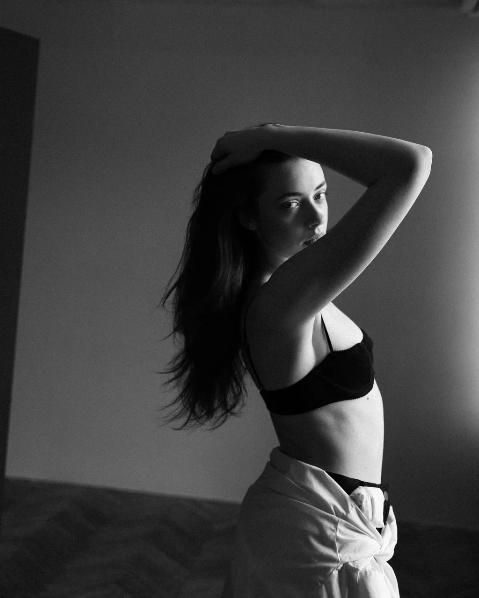
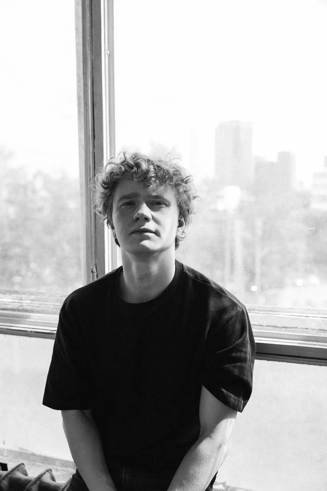
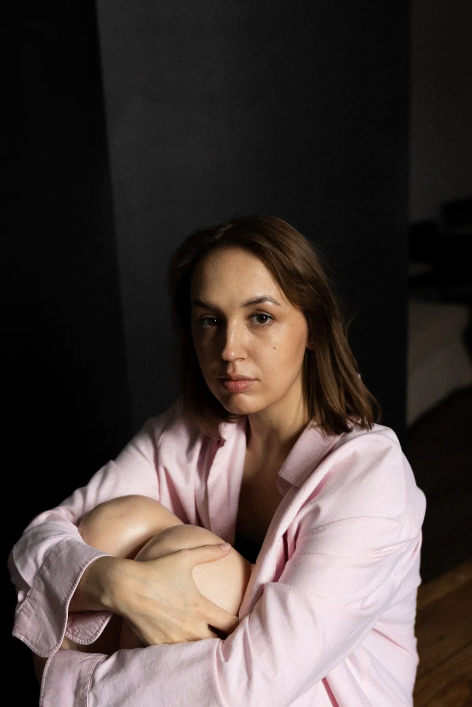
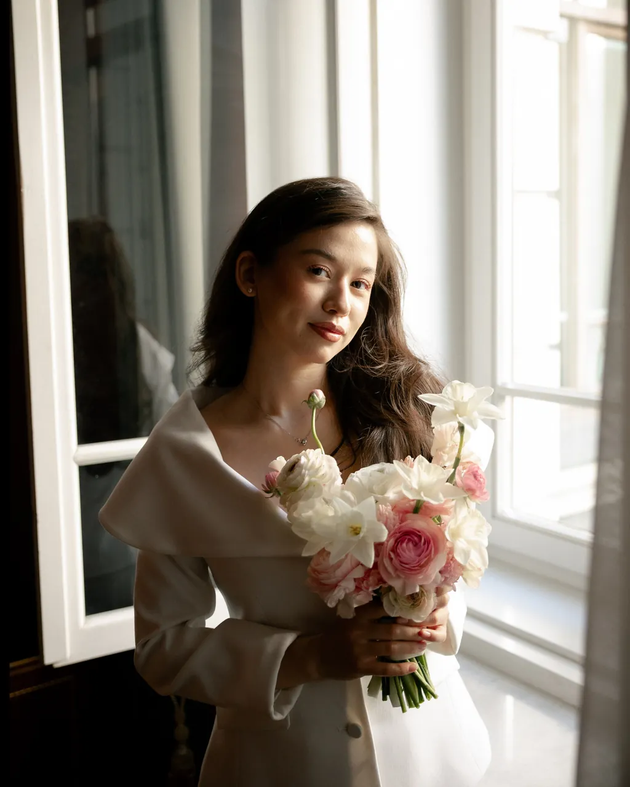
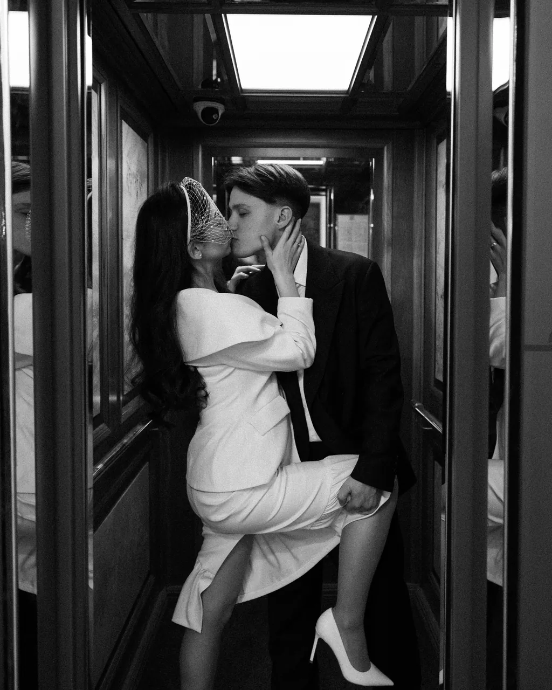
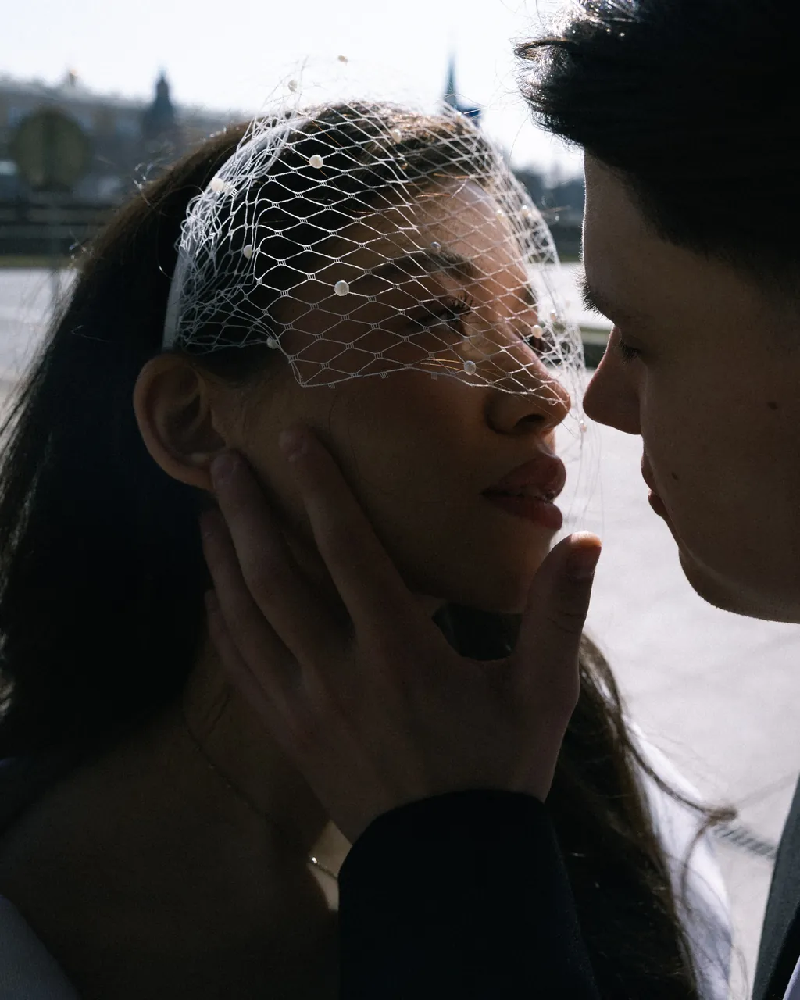
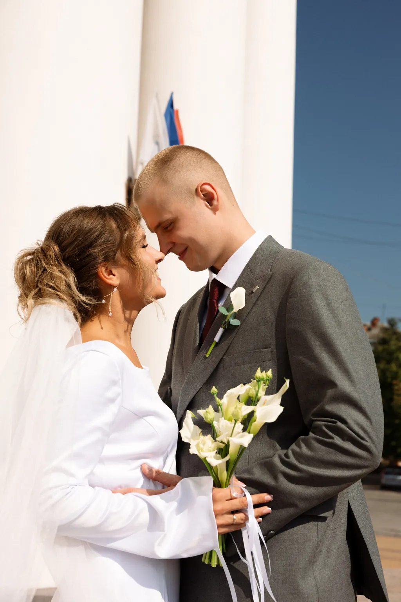
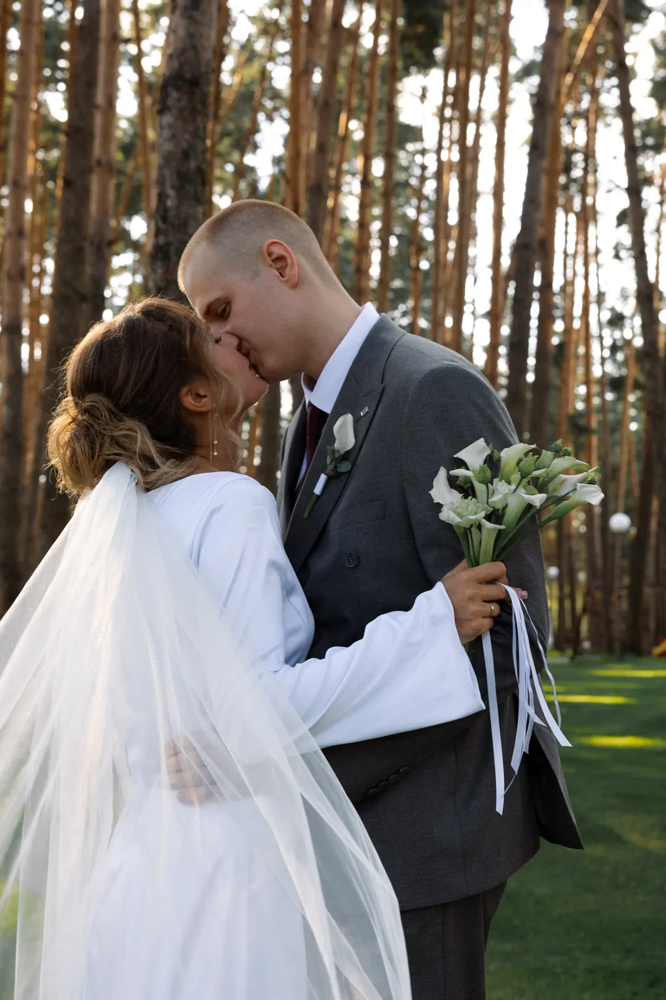
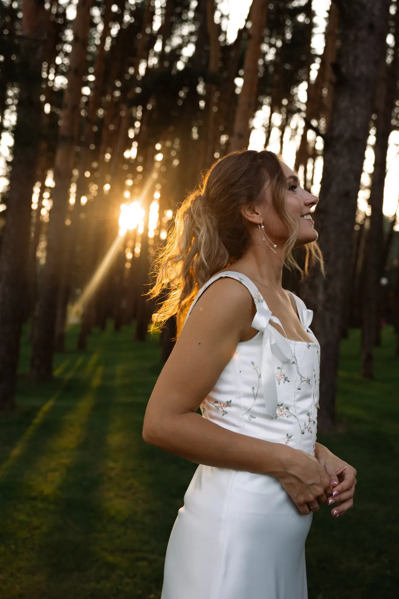

Как я вижу тебя
Фотограф: портреты, роспись, свадьбы.

-
Портрет


-
Роспись



-
Свадьба



Стоимость и свободные даты напишу в Telegram.
Я — Настя
Снимаю для себя то, что случается само — дождь в Гуанчжоу, стаканчик овсяного латте из серфа, август, который летит слишком быстро.